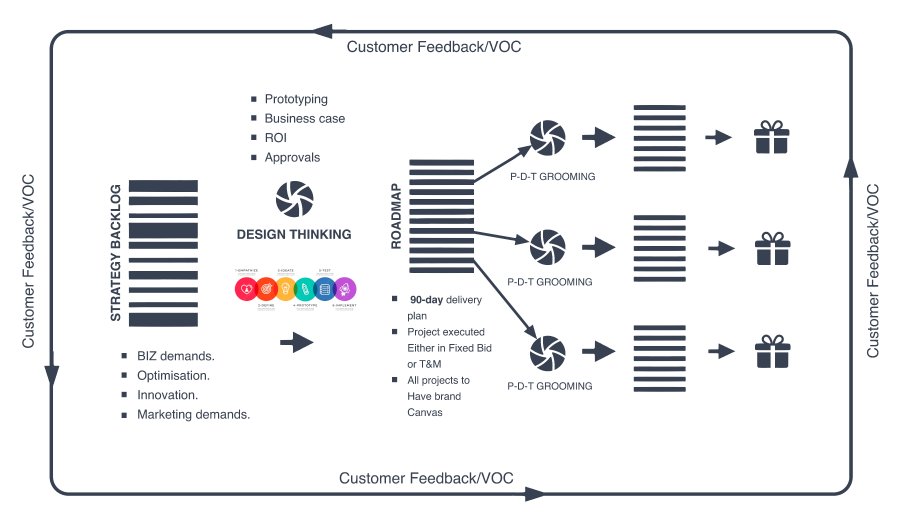

MAGRABi
MAGRABi is the Middle East's leading fashion eyewear and medical eye care specialist, with more than 150 stores across 5 countries in the region, as well as 20 pioneering MAGRABi hospitals focused on vision and eye health research. Digital works has conducted strategy workshops with the management of the MAGRABi to arrive at a high level requirements. We designed the end-to-end Customer value chainto identify the overall Customer-Experience journey. Blue printed the strategy to identify the tangible product roadmap in phases, scoping of features. We helped in defining the foundational aspects for Data, CRM Setup and payments. Digital works team has done overall coordination with various teams to deliver the digital objectives of the Customer working closely with their Chief Digital Officer. We defined the delivery process, team’s structure by working closely with the system integrators / partners. We drove the overall Agile coaching and planned multiple sprint ceremonies like Sprint review, Sprint Demo, Backlog Grooming, Story points etc
Agile Delivery Model
Value Driven Pragmatic Framework
Digital works has driven the Product Management, Product Design, Architecture and Operations. Owned and lead the discovery process with the internal/external teams for arriving at a mutually agreed sprint plan. Reviewed digital architecture and advised changes appropriately to ensure efficiency and business value. Provided Product leadership, Product design (UX) recommendations to customers digital team.
Digital works team has designed and reviewed the digital Architecture scalable for the Customers digital Ambition. Provided technical oversight to the technology vendors on maximizing the business value for the customer. Provided oversight of major customization & integrations in line with Phase-1 launch with Vendors/Partners.
Digital works team has reviewed and validated the operations operating model – L1/L2/L3 support. Provided fulfilment model, consent strategy & operating model, customer service model, 3rd party vendor contracts and Launch support.